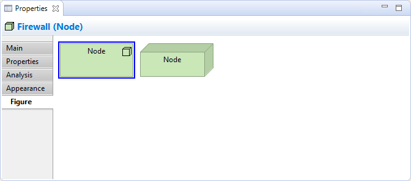

Selecting an element in a View means that you can edit or view additional visual properties in the Properties Window. Different visual settings can be applied to an element for each separate occurrence in a View. For example, the element "Application Service" may be coloured blue in one View, and grey in another View.
The Appearance Tab

Editing the "Appearance" Properties for an ArchiMate Element in a View
This tab is only available when an element is selected in a View.
| Fill colour: | Sets the fill colour for the selected element. The "Default" button sets the fill colour to the default setting. |
| Line colour: | Sets the colour of the line used to draw the selected element. The "Default" button sets the line colour to the default setting. If this is disabled it is because line colours are derived from the element's fill colour, as set in Preferences. |
| Gradient: | Sets the direction used to draw the gradient fill of the selected element. Settings are "None", "Top", Left", "Right" and "Bottom". Note - gradients will not show when a diagram is exported in SVG image format. |
| Text Alignment: | Align text in the selected element to Left, Centred or Right. |
| Text Position: | Align text in the selected element to Top, Middle or Bottom. |
| Font: | Sets the font used for the text in the selected element. The "Default" button sets the font to the default setting as set in Preferences. |
| Font colour: | Sets the colour of the font used for the text in the selected element. The "Default" button sets the font colour to the default setting. |
| Fill Opacity: | Set the fill opacity of the figure. Range from 0-255. |
| Outline Opacity: | Set the outline opacity of the figure. Range from 0-255. |
The Label Tab

Adding a Label Expression to display in the View
This tab is only available when an element is selected in a View.
By default, an element's name will be displayed in any View in which it appears. Using a label expression per View instance, you can choose what is displayed for the element in the View. For example you may wish to display the element's name and its type. Or you may wish to display the value of one or more of its properties.
For a full list of expression types please refer to the Archi Wiki.
The Figure Tab
Setting the "Figure" Properties for a Device
Select the figure to use for an ArchiMate element in a View. This tab is only available when an element is selected in a View and only for ArchiMate elements.
The default figure to use when creating new elements can be set in Preferences.
The Image Tab

Image Properties for an Element
An Image can be displayed for an ArchiMate element in a View either from its Specialization or from a custom image.
| Show Icon: | Whether to show the small icon for an ArchiMate figure. Options are "If no image defined", "Always", and "Never". |
| Image: | Select the source of the image. If the ArchiMate object is linked to a Specialization and you want to display the Specialization's image, choose "From Specialization". Choose "Custom" if you want to display an image not linked to a Specialization. |
| Preview: | A preview image that shows how the image will appear. Double-clicking the Preview box will launch the Image Chooser dialog window. You can also drag and drop an image file from the desktop onto the Preview box. Note - this is disabled if "From Specialization" is selected. |
| Custom Image: | Select a custom image for the object or clear the image. See "Adding Images to Objects" for more details. Note - this is disabled if "From Specialization" is selected. |
| Position: | Sets the position of the image relative to the object. |